Box plots compress a distribution into median, quartiles and outliers for fast group comparison.
WarningCommon pitfall
Hiding sample size misleads; a slim box from n=5 looks as confident as one from n=5000.
In this chapter, we will learn to:
build box plots
modify box
color
fill
alpha
line size
line type
modify outlier
color
shape
size
alpha
The box plot is a standardized way of displaying the distribution of data. It is useful for detecting outliers and for comparing distributions and shows the shape, central tendancy and variability of the data.
9.2 Structure
the body of the boxplot consists of a “box” (hence, the name), which goes from the first quartile (Q1) to the third quartile (Q3)
within the box, a vertical line is drawn at the Q2, the median of the data set
two horizontal lines, called whiskers, extend from the front and back of the box
the front whisker goes from Q1 to the smallest non-outlier in the data set, and the back whisker goes from Q3 to the largest non-outlier
if the data set includes one or more outliers, they are plotted separately as points on the chart
9.3 Data
We are going to use two different data sets in this chapter. Both the data sets have the same data but are in different formats.
If you are not comparing the distribution of continuous data, you can create box plot for a single variable. Map the variable to y and add geom_boxplot(). In the below example, we examine the distribution of stock returns of Apple.
Older code (including earlier editions of this book) used aes(x = factor(1)) as a dummy grouping variable for single boxplots. That workaround is no longer needed but still renders, so you may encounter it in the wild.
9.5 Compare Distributions
9.5.1 Data
For the rest of the chapter, we will use the below data set. Instead of 5 columns, we have two columns. One for the stock names and another for returns.
With the above data, let us create a box plot where we compate the distribution of stock returns of different companies. We map X axis to the column with stock names and Y axis to the column with stock returns. Note that, the column names are wrapped inside aes().
ggplot(tidy_returns) +geom_boxplot(aes(x = stock, y = returns))
To create a horizontal bar plot, we can use coord_flip() which will flip the coordinate axes.
9.6 Horizontal Box Plot
ggplot(tidy_returns) +geom_boxplot(aes(x = stock, y = returns)) +coord_flip()
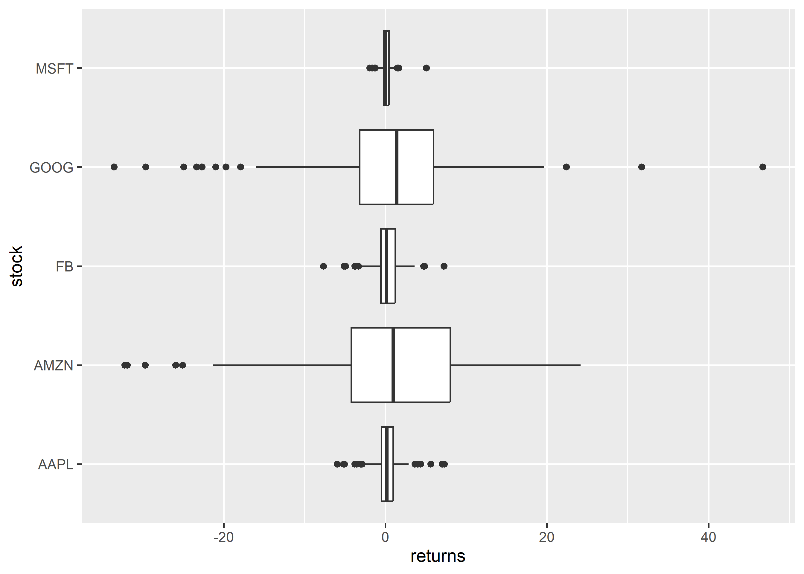
9.6.1 Notch
Notches are used to compare medians. You can use the notch argument and set it to TRUE.
ggplot(tidy_returns) +geom_boxplot(aes(x = stock, y = returns),notch =TRUE)
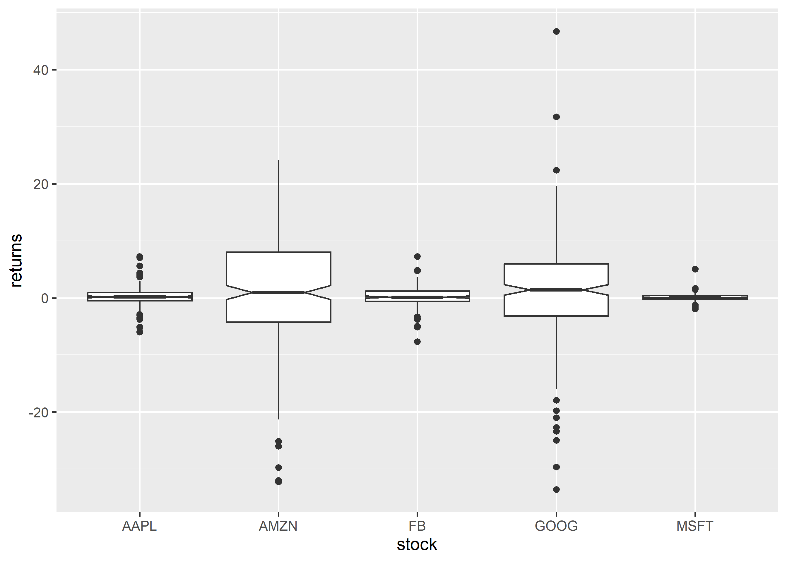
9.6.2 Jitter
Just for comparison, let us plot the returns as points on top of the box plot using geom_jitter(). We modify the color of the points using the color argument and the spread using the width argument.
ggplot(tidy_returns, aes(x = stock, y = returns)) +geom_boxplot() +geom_jitter(width =0.2, color ='blue')
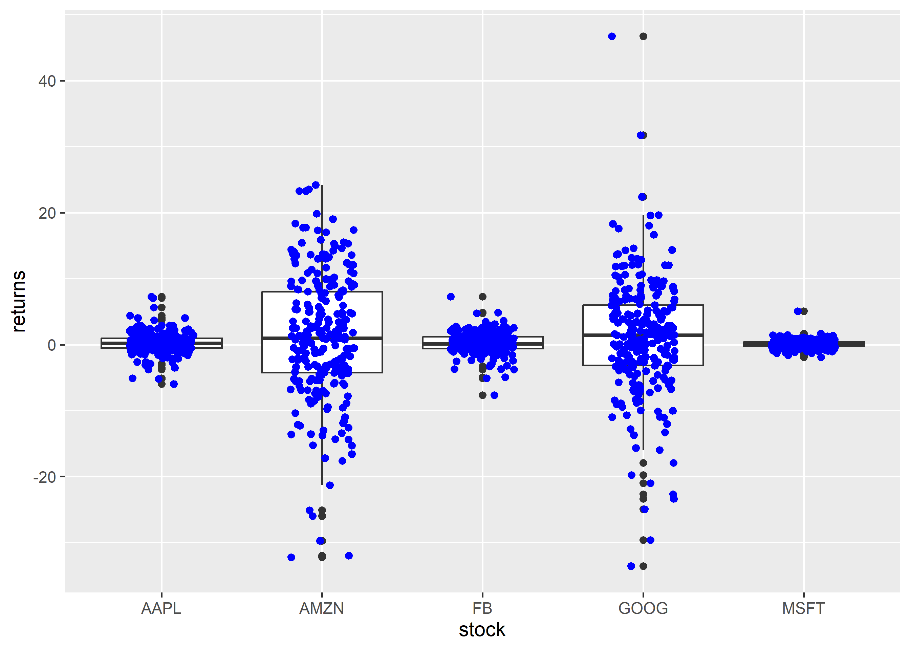
9.7 Outliers
To highlight extreme observations, we can modify the appearance of outliers using the following:
color
shape
size
alpha
To modify the color of the outliers, use the outlier.color argument. The color can be specified either using its name or the associated hex code.
ggplot(tidy_returns) +geom_boxplot(aes(x = stock, y = returns), outlier.color ='red')
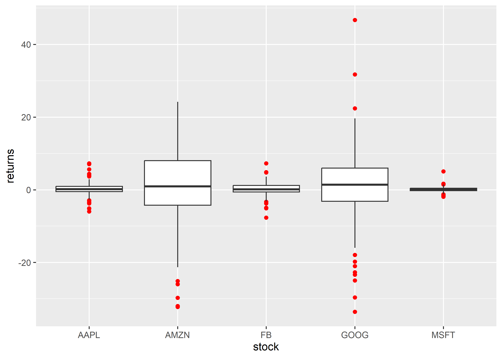
The shape of the outlier can be modified using the outlier.shape argument. It can take values between 0 and 25.
ggplot(tidy_returns) +geom_boxplot(aes(x = stock, y = returns), outlier.shape =23)
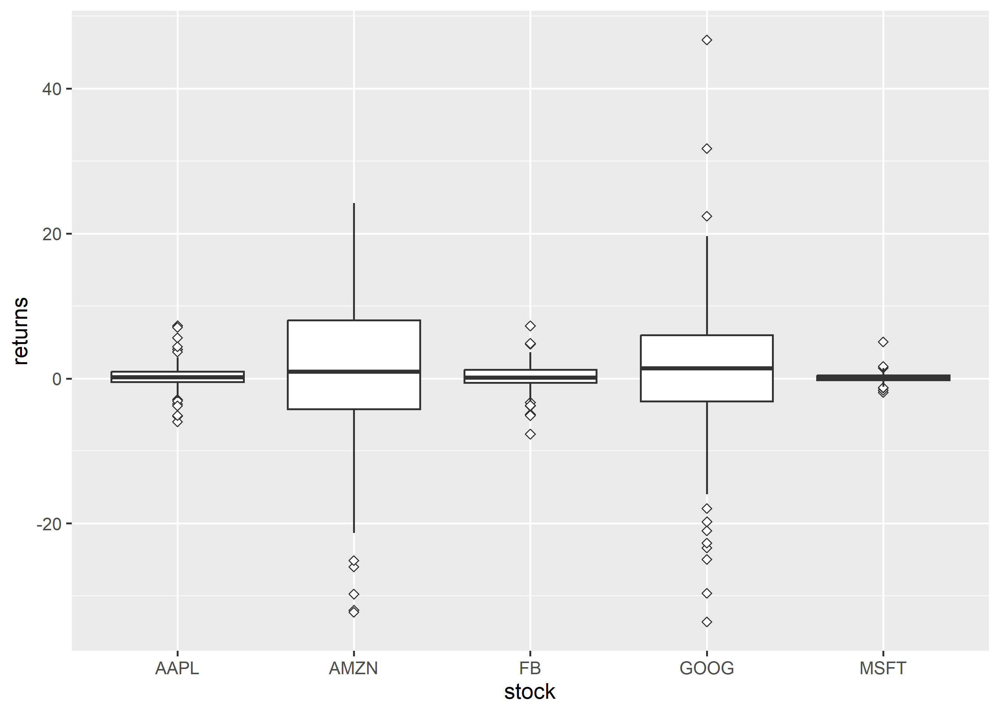
The size of the outlier can be modified using the outlier.size argument. It can take any value greater than 0.
ggplot(tidy_returns) +geom_boxplot(aes(x = stock, y = returns), outlier.size =3)
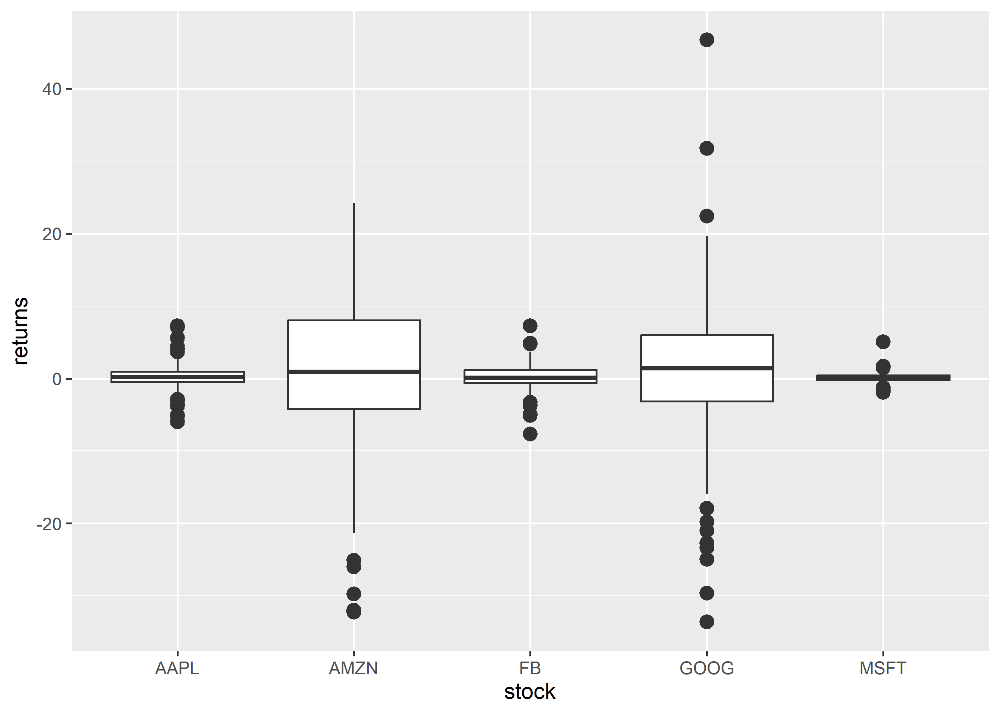
You can play around with the transparency of the outlier using the outlier.alpha argument. It can take values between 0 and 1.
The appearance of the box can be controlled using the following:
color
fill
alpha
line type
line width
9.8.1 Specify Values
The background color of the box can be modified using the fill argument. The color can be specified either using its name or the associated hex code.
ggplot(tidy_returns) +geom_boxplot(aes(x = stock, y = returns), fill =c('blue', 'red', 'green', 'yellow', 'brown'))
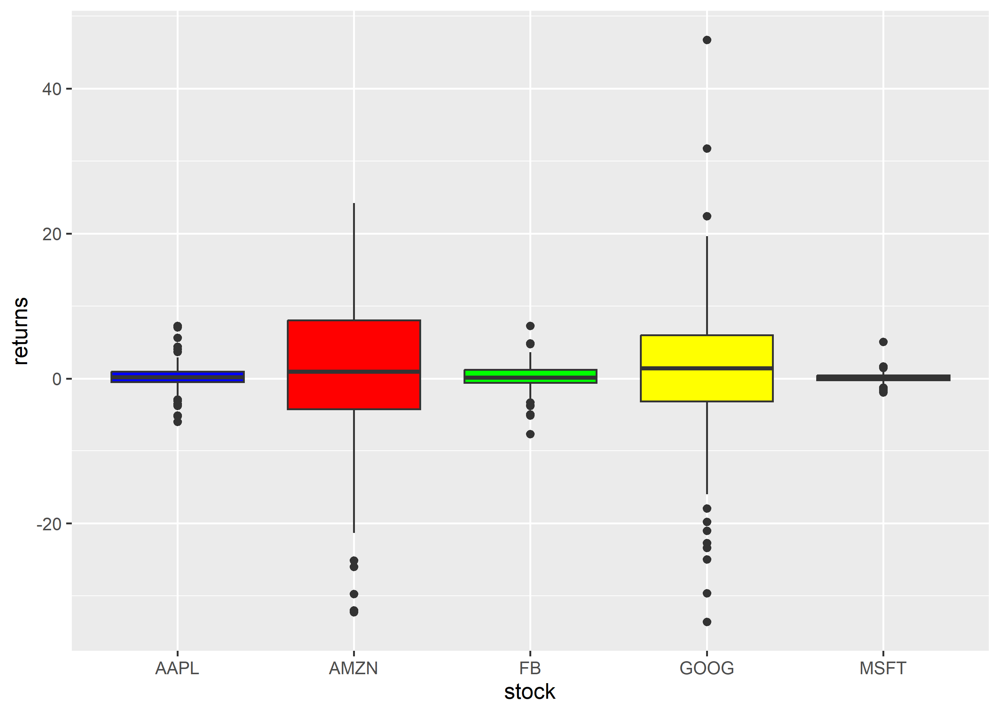
To modify the transparency of the background color, use the alpha argument. It can take any value between 0 and 1.
ggplot(tidy_returns) +geom_boxplot(aes(x = stock, y = returns), fill ='blue', alpha =0.3)
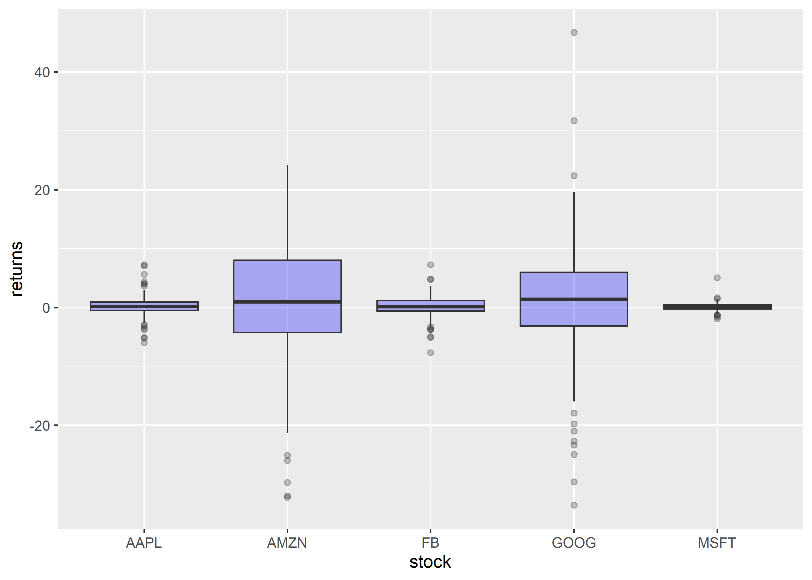
The color of the border can be modified using the color argument. The color can be specified either using its name or the associated hex code.
ggplot(tidy_returns) +geom_boxplot(aes(x = stock, y = returns), color =c('blue', 'red', 'green', 'yellow', 'brown'))
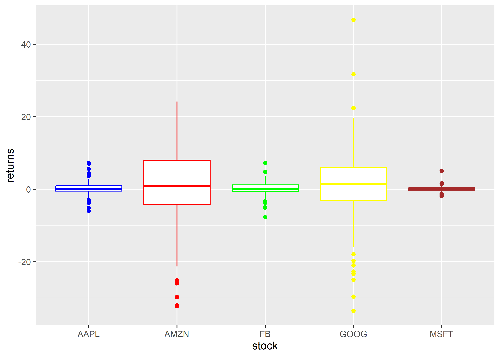
The width of the border can be changed using the linewidth argument. It can take any value greater than 0.
ggplot(tidy_returns) +geom_boxplot(aes(x = stock, y = returns), linewidth =1.5)
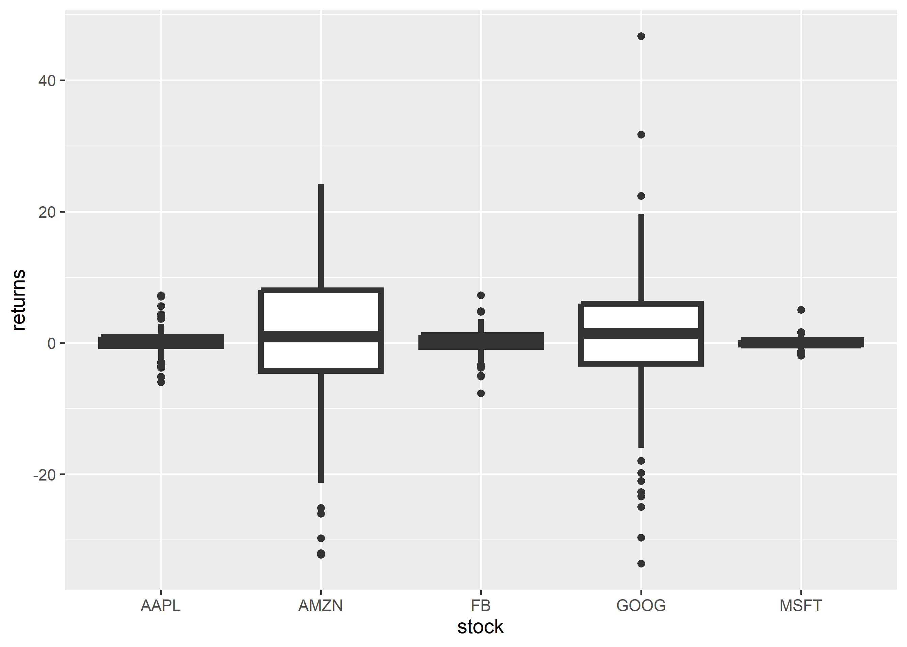
To change the line type of the border, use the linetype argument. It can take any value between 0 and 6.
ggplot(tidy_returns) +geom_boxplot(aes(x = stock, y = returns), linetype =2)
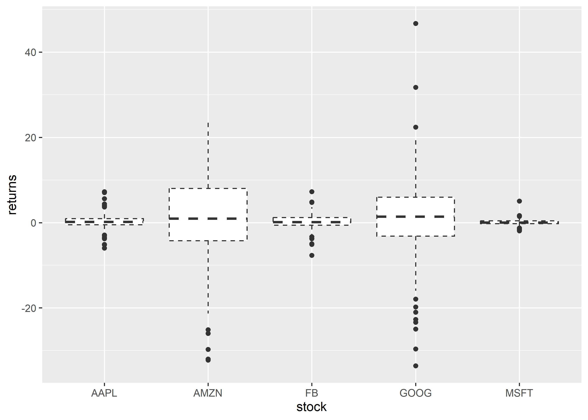
9.9 Map Variables
Instead of specifying values, we can map fill and color to variables as well. In the below example, we map fill to the variable stock. It assigns different colors to the different stocks.
ggplot(tidy_returns) +geom_boxplot(aes(x = stock, y = returns, fill = stock))
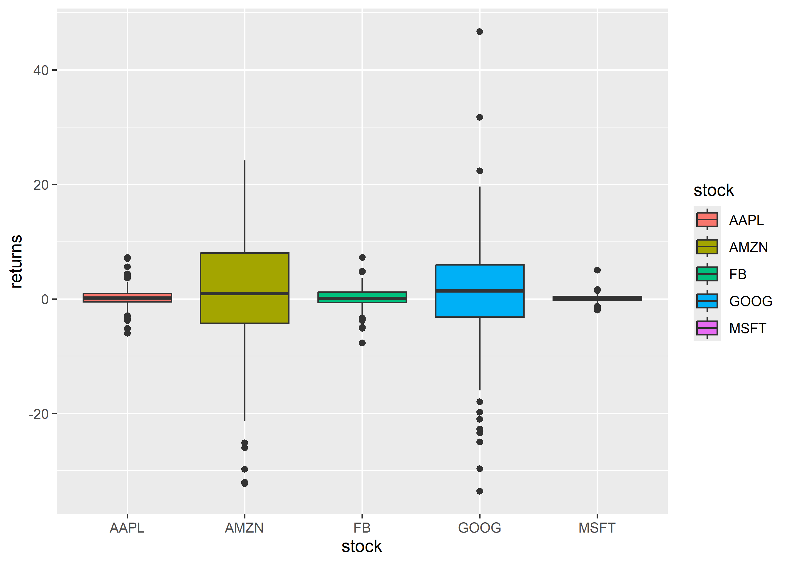
Let us map color to the variable stock. It will assign different colors to the box borders.
ggplot(tidy_returns) +geom_boxplot(aes(x = stock, y = returns, color = stock))
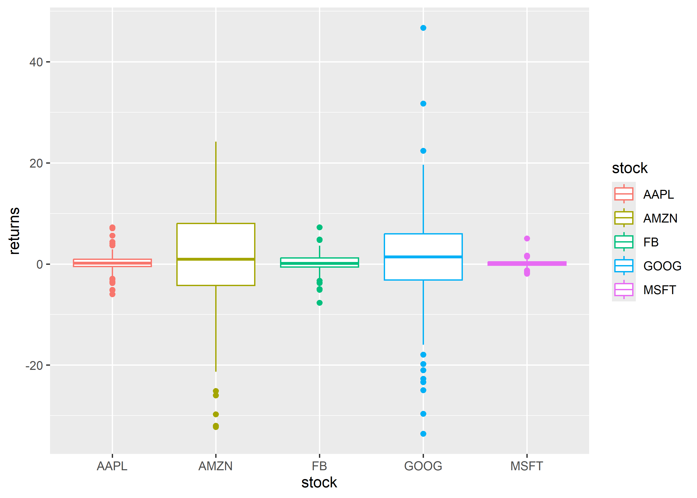
9.10 Exercises
Draw mileage by cylinders from mtcars.
Draw a single-variable boxplot of mpg using modern syntax (no factor(1)).
Rewrite the grouped plot with a message-first title and no redundant legend.
Worked solutions in solutions/box.md (attempt first).
Where to go next
ggplot2 book (ggplot2-book.org) for theory behind this layer
Claus Wilke, Fundamentals of Data Visualization, for perception guidance